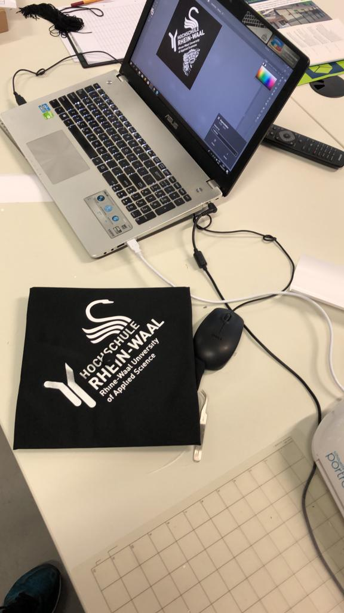

AR Mortarboard
HSRW Bachelor Graduation · 2019

For my bachelor graduation at Rhine-Waal University (HSRW), I built an augmented reality mortarboard — a graduation cap that comes alive when viewed through a phone camera. Inspired by Emily Salvador's AR mortarboard at MIT, I wanted to bring the same playful mix of craft and technology to my own ceremony.
With only three days before graduation, the project had to be fast, simple, and reliable. The cap itself became both the physical object and the AR trigger.
Design & Fabrication
I designed a graphic for the top of the cap and cut it with a vinyl cutter, then applied the sticker directly onto the mortarboard. The flat, high-contrast pattern works well as a visual marker that AR software can recognize consistently, even in bright outdoor light on graduation day.

The finished mortarboard with vinyl marker graphic
Animation
The overlay animation was created in Adobe Illustrator. I exported around 50 sequential frames to build a short looping animation — Illustrator was the tool I knew best under time pressure, and frame-by-frame export gave me full control over the visual style without needing a separate video editing pipeline.

Animation frames exported from Illustrator
AR Tracking with Artivive
For the augmented reality layer, I used Artivive — an accessible platform for linking a physical artwork to a digital overlay. The workflow is straightforward: upload a reference image of the cap's marker graphic as the trigger, then attach the animation as the AR content. When someone opens the Artivive app and points their phone at the cap, the animation plays on top of the mortarboard in real time.
What I Learned
- Simple, bold marker graphics work better than complex prints for AR tracking
- Vinyl cutting is a fast way to prototype recognizable physical triggers
- Frame-based animation in Illustrator can be enough for short AR overlays
- Tools like Artivive lower the barrier to AR without writing custom apps